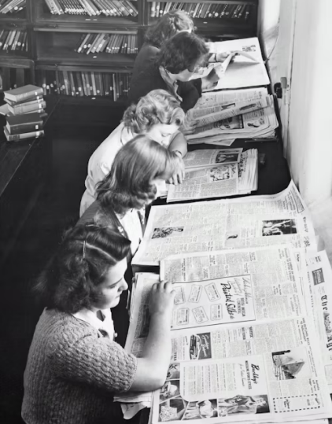

Уроки школьной политинформации: Как это было?
Уроки политинформации, проводимые в определенные дни перед началом уроков, как раз и относились к разряду "отчетных" мероприятий, не неся в себе никакой ценности для учащихся. Наверное, во всех советских школах эти уроки проходили примерно одинаково: в какой-то один учебный день на занятия нужно было являться на 15-30 минут раньше обычного, потому что это время отводилось на политинформацию.
Читать далее